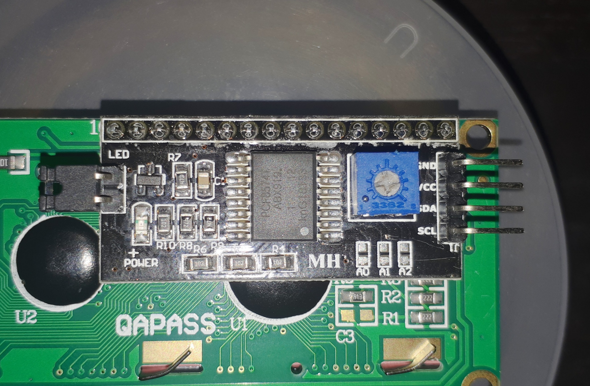

One morning I woke up to this.
After some further investigation, it became clear that sometimes turning the lights on or off would make the LCD output gibberish. I also noticed that turning the lights on severely impacted the brightness and color of the characters on the LCD. Is the relay sucking too much juice?
The arduino uno is rated to output 200 mA and each of the relays draw 120 mA. o-oh. I quickly fixed this by using one relay instead of two (leaving one of the AC lines connected). This solved the character brightness issue, but the LCD would still would get garbled at times.
I found advice online to connect the relay up to a separate power source, but the issue was still present, although a lot less common. For the time being, the best solution I could come up with was removing the relay and having the 12V PSU always on. This fixes the issue, but results in higher idle power draw. To reduce the complexity of the project, I also removed the 5V PSU, one of the DC-DC buck converters (one is more than enough for 4 LEDs) and powered the arduino from the buck converter.
I am not thrilled about having the 12V PSU connected at all times, but I don't see a better alternative at this point. I ordered an I2C module for the LCD in the hopes that having a serial connection between the arduino and LCD would fix these issues as the RTC (which is connected via I2c) seems to be unaffected by the noise from the relay.
Some time passes...
The I2C LCD module arrived!
Two data pins instead of six, but the same functionality - AMAZING. I wish I had bought this earlier. I bet that if I had this at the beginning, i would have skipped at least a few hours or head-scratching. The most important part - using I2C for the LCD instead of the 6 data pins solved the relay noise issue!
Previous part: Implementing the UI